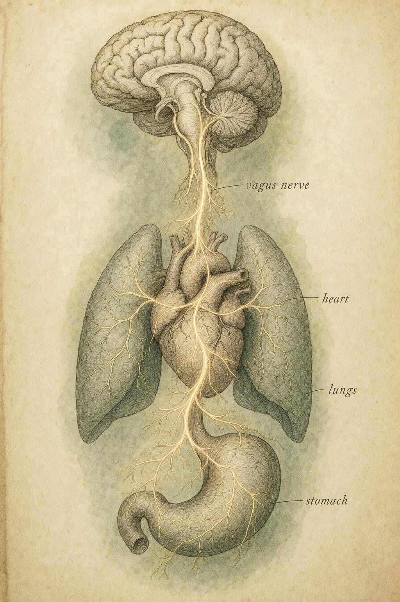

Threat and the Recovery Brake
Why the stress response is a feature, why it becomes costly when it never switches off, and how the parasympathetic brake actively brings a mobilized body back home.
A car swerves into your lane. Before you can name what happened, your foot is already off the accelerator, your hands have tightened on the wheel, and your heart is slamming against your ribs. You did not decide any of this. A circuit older than language read the geometry of the threat, priced it in milliseconds, and spent your body's reserves to buy you a margin of safety. The car straightens, the danger passes, and now comes the part almost nobody thinks about. Somewhere in your brainstem, another system has to undo all of that. It has to release the brake it just slammed on your gut, ease your heart back down, and return a mobilized body to rest.
That second act, the recovery, is the quiet hero of this chapter. We tend to treat stress as the interesting thing and calm as merely its absence, the flat line between spikes. But calm is not a default state that reappears the instant a threat leaves. It is an active process, driven by dedicated machinery, and the speed and completeness with which a person's body performs it may matter more for long-term health than the size of any single spike.
Throughout this chapter you will follow one learner, Josephine, a 38-year-old who enrolled in this course after a rough stretch at work left her wondering why she felt wired for hours after a stressful meeting ended and why some weeks she seemed to shake things off while others left her feeling permanently on edge. Josephine is not a case to be solved and nothing in this chapter diagnoses her. She is a thread we will follow to keep the physiology grounded in a life a learner might actually recognize, and we will be careful, the whole way through, to keep her a stand-in for an honest question rather than a patient file.
Two pedals, under pressure
In the previous chapter we built the autonomic nervous system as a car with two pedals: the sympathetic branch as the accelerator that mobilizes energy for action, and the parasympathetic branch as the brake that conserves and restores. We treated them as a balance a person idles at, tilting one way or the other across an ordinary day. This chapter takes those same two pedals and floors the accelerator, because that is precisely what a threat does.
The word stress has been so overused that it has nearly lost its edge, so let us be precise. In this working model, a stressor is anything the brain appraises as a demand that threatens to outstrip current resources, a real challenge or an anticipated one, a physical insult or a purely social one. The brain does not require the threat to be physical or even real. A looming deadline, a hostile email, a memory of an old embarrassment replayed late at night: each can launch the same coordinated physiological response as the swerving car. This is a central and slightly unsettling fact of the model: the stress response is driven by appraisal, not by objective danger. A person's body spends real glucose and real cardiac output on imagined threats.
Chrousos (2009), in a landmark mapping of the stress system's architecture, frames this with useful neutrality. The stress system, he argues, exists to maintain a dynamic equilibrium, or homeostasis, that is constantly being challenged by internal and external forces he calls stressors. A well-functioning system is not one that never activates. It is one whose basal activity and responsiveness are tuned so that it fires appropriately, does its work, and stands down. The pathology is never activation itself. It is activation that is too large, too frequent, or, the theme we will return to again and again, that fails to switch off.
Josephine's meetings are a useful case in point. Nothing in a quarterly budget review threatens her physical survival. Yet her account of those afternoons, a tight chest, a racing pulse, hands that will not quite sit still for an hour afterward, is not an exaggeration or a character flaw. It is her appraisal system doing exactly what it evolved to do: treating a genuine social and professional threat with the same machinery that would greet a swerving car, because to a brain built on a much older timescale, status, belonging, and competence are not abstractions. They are resources worth defending.
It is worth pausing on why the appraisal step matters so much for everything that follows in this chapter. If the stress response were triggered only by objective physical danger, the whole system would be relatively easy to reason about: no predator, no cascade. But because a hostile email can trip the same circuitry as a swerving car, the frequency and intensity of a person's stress activation is bound up with how their brain interprets the world, not merely with how dangerous the world actually is. Two learners can sit through the identical meeting and walk out with very different physiologies, not because one of them is weaker, but because their appraisal systems, shaped by history, context, and current resources, read the same event differently. This is not a flaw to be corrected. It is simply where the story of an individual stress response actually begins.
The acute response as an adaptation
Start with respect for the machinery, because the design is genuinely elegant. When the brain flags a threat, it does not send a single signal. It launches a two-wave, two-speed cascade, each wave optimized for a different timescale. Understanding that the fast wave and the slow wave are different systems with different jobs is the single most clarifying idea in this chapter.
Wave one: the fast sympathetic-adrenal-medullary (SAM) surge
The first wave is electrical and nearly instantaneous. Within a fraction of a second of threat appraisal, sympathetic neurons fire down the spinal cord and out to the organs. They also strike the adrenal medulla, the inner core of the adrenal gland, which dumps adrenaline (epinephrine) and noradrenaline (norepinephrine) directly into the bloodstream. Physiologists call this whole pathway, the sympathetic nerves plus the adrenal medulla acting together, the sympathetic-adrenal-medullary (SAM) axis. It is the classic fight-or-flight surge, and its effects arrive on the order of seconds: heart rate and force of contraction jump, airways widen, blood is shunted from the gut and skin toward the large muscles, the liver releases glucose, pupils widen, and clotting factors rise in anticipation of injury. It is a body reconfigured for immediate physical action, and it happens faster than a person can form the thought I am scared.
Wave two: the slower hypothalamic-pituitary-adrenal (HPA) axis
The second wave is hormonal, slower, and longer lasting: the hypothalamic-pituitary-adrenal (HPA) axis. The hypothalamus releases corticotropin-releasing hormone (CRH), which prompts the pituitary gland to release adrenocorticotropic hormone (ACTH), which travels through the blood to the adrenal cortex, the outer layer of the same gland whose core just fired the SAM surge, and which finally secretes cortisol. Because this is a relay of hormones through the bloodstream rather than a direct nerve signal, it is slow to build. Cortisol rises over minutes, peaks perhaps fifteen to thirty minutes after the stressor, and lingers in circulation for an hour or more. Its jobs are different from adrenaline's: it sustains the mobilization by liberating stored energy, it modulates the immune system, it sharpens certain forms of memory, and, crucially, it participates in the negative-feedback loop that eventually shuts the whole response down (Chrousos, 2009).
So the architecture is this: a fast nerve to react and a slow hormone to sustain and then resolve. The body reacts in a second but takes an hour to chemically settle. That asymmetry, instant onset, gradual offset, is not a bug. For an acute physical challenge on the ancestral timescale, a predator, a fall, a fight lasting seconds to minutes, it is exactly right. A person needs to move now, and needs metabolic support and immune preparation for the recovery period that follows. This course's companion volume on cortisol treats the HPA axis and its daily rhythm in far more depth, tracing the molecule from synthesis through what happens when that rhythm flattens. Here we need only the shape of the wave: slow to rise, slow to fall, and the workhorse of sustained mobilization. The figure below lines both waves up on a shared clock, and the first widget lets you scrub through it yourself.
Allostasis: stability through change
We have been calling the resting state baseline, but the body's regulatory logic is subtler than a thermostat returning to a fixed setpoint. Bruce McEwen gave us the sharper word: allostasis, meaning stability through change (McEwen, 1998a, 1998b). Where homeostasis implies defending a constant internal value, allostasis describes how the body actively varies its internal parameters to meet anticipated demand: raising blood pressure before a person stands, releasing glucose before a person runs, ramping cortisol on a daily rhythm that peaks before waking. The stress mediators, catecholamines and glucocorticoids, are the primary agents of allostasis. They are how the body changes in order to stay stable.
This reframing matters because it dissolves the naive good or bad framing of stress hormones. McEwen's central argument, laid out in his 1998 New England Journal of Medicine paper, is that the very same mediators are protective in the short run and damaging over long periods of time. Cortisol is not a toxin. Adrenaline is not the enemy. They are essential tools, and like any tool used continuously and without rest, they inflict wear. McEwen named that cumulative wear allostatic load: the price the body pays for repeated cycles of activation, for responses that fail to habituate to a repeated challenge, and, most importantly for us, for responses that fail to shut off when the challenge is over.
Look closely at that list, because it corrects a common misconception. Allostatic load is not simply too much stress. Three of the four routes are about the shape of the response over time rather than its size: whether it habituates, whether it shuts off, whether the systems coordinate. A person can carry a heavy allostatic load not because their spikes are large but because their responses never fully resolve, the trace never returns to baseline before the next demand arrives. This is why the recovery brake, not the accelerator, is the true protagonist of this chapter. The cost of chronic activation is, at root, a failure of recovery.
What appraises the threat: the neural governor
Before we get to recovery, we need to know where the off signal comes from, and that means asking who is in charge of the response in the first place. Ulrich-Lai and Herman (2009) provide the cleanest anatomy of this in their review of the neural regulation of endocrine and autonomic stress responses, and their key distinction maps directly onto our appraisal theme.
They divide stressors into two families. Systemic, or reactive, stressors, blood loss, low blood sugar, a drop in oxygen, are genuine physiological emergencies, and the brainstem and hypothalamus can mount a response to them almost directly, without needing to consult higher cognition. But psychological, or anticipatory, stressors, the hostile email, the anticipated exam, the social threat, are different. There is no chemical in the blood that signals my colleague was rude. These threats must be interpreted, and the interpretation happens in the limbic forebrain: the amygdala flagging salience and threat, the hippocampus supplying context and memory, and the medial prefrontal cortex exerting regulatory control. These structures do not talk to the adrenal glands directly. They route their influence through the hypothalamus and brainstem, biasing whether the stress cascade fires and how hard.
This is a profound point for a working model. It means the prefrontal cortex, the seat of context, reappraisal, and inhibitory control, sits upstream of a person's autonomic output. When it functions well, it can down-regulate an amygdala alarm before the full cascade launches, or terminate it early once context reveals the threat to be harmless. When it is offline, fatigued, sleep-deprived, or itself flooded by chronic stress, that top-down brake weakens, and the amygdala's alarms run less opposed. Ulrich-Lai and Herman document precisely this pattern under chronic stress: the circuit remodels, with the amygdala strengthening and prefrontal-hippocampal regulation weakening, so the system becomes progressively easier to trip and harder to calm. The stress response, in other words, shapes the very hardware that regulates the stress response.
The recovery brake
Now the hero enters. If the sympathetic surge is the accelerator, the parasympathetic branch is the brake, and its major cable is the vagus nerve, the tenth cranial nerve, a sprawling bidirectional highway that leaves the brainstem and reaches the heart, lungs, and gut. On the heart, vagal activity does something remarkable: it applies a continuous, tonic restraint. A person's intrinsic cardiac pacemaker, left to itself, would fire around 100 beats per minute. Resting heart rate is lower, perhaps 60 to 70, because the vagus is actively holding it down. Rest is not passive. It is the brake pressed and held.
This is why recovery is an active process rather than a return to default. To calm down after a threat, the body does not merely stop pressing the accelerator. It actively re-engages the brake: it restores vagal tone, slows the heart, and quiets the sympathetic outflow. The speed and vigor with which it does this is the thing we most want to measure, and it is a large part of what separated Josephine's better weeks from her worse ones. On her better weeks the tight chest from a hard meeting eased within twenty minutes. On her worse weeks it simply did not, and she carried the leftover charge into the evening without ever quite noticing it arrive.
Measuring the brake: heart rate variability (HRV)
Here is where the model gets satisfyingly concrete. Because the vagus applies its brake beat by beat, and because its activity waxes and wanes with each breath, rising on exhalation, easing on inhalation, a healthy vagal brake produces small, continuous variations in the time between heartbeats. This is heart rate variability (HRV). Counterintuitively, a heart that beats like a metronome, perfectly regular, is a warning sign, not a good one. A little jitter means the vagal brake is alive and responsive, adjusting moment to moment. Vagally mediated HRV has become the standard non-invasive window onto parasympathetic function, and it is measured simply by timing the interval between successive heartbeats over minutes and asking how much that interval varies.
Thayer and colleagues (2009) built an influential framework around this measurement, the neurovisceral integration model. Their argument is that a single shared neural network links the prefrontal cortex, the amygdala, and the vagal output to the heart, and that this network underlies emotion regulation, executive cognition, and stress reactivity all at once. HRV, in their model, is a readout of that network's health. A later meta-analysis by the same group pooling neuroimaging studies found that resting HRV correlates with activity in the ventromedial prefrontal cortex and related regions involved in threat appraisal and self-regulation, lending anatomical weight to the idea that a beat-to-beat heart signal and a brain's regulatory capacity are two views of the same system (Thayer et al., 2012). And the empirical pattern the group assembles across studies is striking: people with higher resting HRV tend to perform better on executive-function tasks, regulate emotion more effectively, recover faster from stressors, and show more behavioral flexibility, across both threatening and non-threatening conditions. Laborde and colleagues (2017), reviewing the methodology behind this whole field, are careful to note that HRV must be measured and reported with real rigor, since posture, breathing pattern, time of day, and fitness all shift the number, but the underlying construct, vagally mediated cardiac control as a marker of self-regulatory capacity, has held up across a large and growing literature. The vagal brake is not just about the heart. It indexes the whole capacity for flexible self-regulation.

The vagus nerve: the body's principal parasympathetic brake line, reaching from brainstem to viscera." data-image-idx="1" style="display:block;max-width:100%;max-height:75vh;height:auto;width:auto;margin:0 auto;cursor:pointer;">Perna and colleagues (2020), reviewing the evidence systematically, push the interpretation further: they position vagally mediated HRV as a candidate biomarker of mental health resilience, a global index of an individual's flexibility and adaptability to stressors. Their review notes the real limits, HRV is influenced by fitness, age, posture, breathing, and measurement method, and no single number is destiny, but the convergent picture is that the capacity of the vagal brake tracks how well a person weathers challenge. Resilience, on this account, is not the absence of stress reactivity. It is the presence of a strong, fast recovery.
Autonomic flexibility: the real marker of a resilient system
We can now state the chapter's central claim precisely. What distinguishes a resilient nervous system is not that it never mobilizes, and not that it stays calm under everything. It is autonomic flexibility: the ability to shift quickly and appropriately between mobilization and recovery. Floor the accelerator when the situation demands it, release it fully, and press the brake the instant the demand passes. Up when a person needs to be up, down when they can afford to be down, and fast transitions in both directions.
Think of it as a range-of-motion problem rather than a set-point problem. A flexible system explores the full range, high arousal for a sprint, deep recovery for rest, and moves freely between them. A chronically activated system loses that range. It gets stuck in the upper register: elevated resting heart rate, blunted HRV, a stress response that fires readily and resolves poorly. Each new stressor lands on top of an incompletely resolved previous one, and the baseline itself creeps upward. This is McEwen's allostatic load rendered as a picture: not one catastrophic spike, but a trace that never comes home.
This was Josephine's actual pattern, once she looked for it. It was not that her Monday meeting produced an unusually large spike. Colleagues who sailed through the same meeting had comparably tense moments in it. The difference was what happened after. Her body took the rest of the afternoon to climb back down, and by Wednesday a second demanding call arrived on top of Monday's unfinished business. Nothing about any single event was extreme. The trace simply never came all the way home before the next thing asked something of it.
The one voluntary handle: slow exhalation
Almost everything we have described is automatic. A person cannot decide to lower their cortisol, and cannot consciously command the vagus to press harder on the heart. But there is one rare, genuine handle on this otherwise-automatic system, and it runs through the breath.
The link is anatomical. Vagal activity is not steady across the breath cycle. It surges on exhalation and eases on inhalation. This is respiratory sinus arrhythmia, the reason a person's heart speeds slightly on the inhale and slows on the exhale. Because exhalation is the phase of maximal vagal braking, deliberately lengthening the exhale extends the window in which the brake is most engaged. Slow the breathing overall, and especially draw out the out-breath, and a person is, in effect, manually working the parasympathetic brake.
Gerritsen and Band (2018) formalized this into what they call the respiratory vagal nerve stimulation (rVNS) model. Their review proposes that the diverse benefits attributed to contemplative practices, meditation, yoga, and certain prayer traditions, all of which converge on slow breathing with extended exhalations, arise substantially from this mechanism: slow, exhale-weighted breathing stimulates the vagus both phasically, beat to beat during the practice, and tonically, a lasting shift in baseline autonomic balance, restoring parasympathetic activity and quieting sympathetic dominance. The breath is a door into the autonomic house that is normally locked from the inside.
Josephine tried this on a Wednesday afternoon, five minutes of counting a longer exhale than inhale before her second call of the day. She did not report feeling transformed. She reported feeling like the meeting landed on a slightly lower shelf than it would have otherwise, which is a modest claim and, on this model, exactly the claim the mechanism supports.
Two honest caveats belong here, in keeping with this course's stance. First, this is a general working-model principle for understanding a learner's own physiology, a way to comprehend why a few slow breaths can perceptibly change how someone feels, not a clinical intervention, not a treatment, and not a protocol to deliver to anyone else. Second, the effect is real but modest and immediate. It is a handle on the fast sympathetic wave, not a switch that clears cortisol from the blood. Recall the two-speed design: a person can begin pressing the brake within a breath or two, but the slow hormonal tide still recedes on its own schedule. The value of the voluntary handle is that it lets a person start recovery deliberately rather than waiting for it to happen to them.
Safety, threat, and the sense of calm
There is one more layer worth naming, because it connects the machinery of this chapter to the felt experience of being stressed or safe. Stephen Porges (2022), in his account of Polyvagal Theory, argues that the autonomic nervous system is continuously and non-consciously scanning the environment for cues of safety and threat, a process he calls neuroception. On his model, the ventral portion of the vagal system, the newest in evolutionary terms, provides the parasympathetic brake that permits both physiological calm and social engagement: a person can only rest, digest, and connect with others when the nervous system has neurocepted safety. When it detects sustained threat and cannot access that state, it locks into more defensive modes.
Polyvagal Theory is not without its critics, and some of its specific evolutionary and anatomical claims remain contested in the primary literature, a tension worth flagging honestly for advanced readers. But its core phenomenological insight is well supported by the rest of the work in this chapter and deserves to be carried forward: the sense of feeling safe is not vague or purely psychological. It has a measurable neurophysiological substrate in the state of the vagal brake. Calm is something the body does, and it does it best when it has registered that the threat is gone. This is exactly why appraisal sits at the front of the whole system, and why, as we will see in Chapter 6, learning to accurately notice a person's own internal state is itself a lever on recovery.
Notice how neatly this closes the loop back to where the chapter opened. Appraisal decides whether the cascade fires at all. Neuroception, on Porges's account, is a related but distinct, more continuous background process, less a single verdict than an ongoing weather report the nervous system runs on the environment, cueing whether it is safe to power down the brake and let recovery proceed. A person can be technically safe, no lion, no swerving car, no hostile email in progress, and still fail to recover if the nervous system has not registered that safety. This is one reason a change of scenery, a familiar voice, or simply time spent with people who feel unthreatening can accelerate recovery even when nothing about the original stressor has been resolved on paper.
The same physiological mediators that protect the body in response to acute stress can, over time, damage it, when the response is activated too often, or fails to shut off when it is no longer needed.
Paraphrasing McEwen (1998a), on the double edge of stress mediators
Case study: Josephine and the meeting that would not end
Run Josephine's situation through this chapter and the confusion mostly dissolves, not into a diagnosis, which is not ours to give, but into a set of honest questions the article had skipped. Start with the tense feeling during the meeting itself. That is the SAM axis doing precisely what it evolved to do: appraising a demanding social situation and mobilizing for it. There is nothing there to fix. The interesting question was never the spike. It was the hours afterward.
Move to the wired feeling that lingered once the meeting ended. This is the two-speed design made concrete. The nerve wave, the SAM surge, resolves within minutes once the acute demand passes. But the HPA wave, the slower cortisol rise, is often still climbing or still elevated a half hour or more after the triggering event, which can produce exactly the lingering, unsettled feeling Josephine described, distinct from and outlasting the sharper in-the-moment tension. She had been reading a normal feature of the two-speed cascade as evidence that something was permanently broken.
Now the belief that she needed to lower her cortisol. Nothing in her account suggests her stress mediators were the problem in the sense the article implied. What her account actually suggests, read through the lens of allostatic load and autonomic flexibility, is a recovery question: how quickly and how completely did her system return to baseline once each demand passed, and how much did each unresolved episode carry forward into the next. That is a question about the brake, not about the size of the accelerator's push, and it is a very different target than lowering a hormone.
Here is the part that matters most, and it is where the boundary in the next section does real work. Nothing above tells Josephine whether her pattern is a passing rough patch, a sign of a workload that needs to change, or something worth a professional conversation. Her fatigue and her wired evenings are real and could have several explanations, from sleep habits to workload to something else entirely. What this chapter offers her is not a verdict. It is a better set of questions: what happened in the hours after the meeting, not just during it, and whether her evenings, week after week, ever fully arrived at rest before the next demand landed.
The line we will not cross
Before we close, we need to name the frame that governs this entire course, because it shapes what these chapters are for and what they are not. This is education, not diagnosis or treatment. We explain mechanisms and we point toward qualified clinicians when a specific person's specific situation calls for it. We do not diagnose, treat, or manage anyone's condition, in a learner or in anyone else.
That boundary is not legal boilerplate. It follows directly from the physiology in this chapter. A racing heart, restless sleep, or a wired feeling that will not settle can arise from an ordinary, unresolved stress response exactly as described here, or from a range of medical conditions, including cardiac and thyroid conditions, that produce overlapping symptoms and genuinely require a clinician's evaluation. A course cannot and should not tell a learner which one is happening in their own body. What it can do is give a learner an accurate model of the ordinary mechanism, so that when something does not fit that model, they know it is worth a professional look rather than a home remedy.
Hold onto why this boundary is protective rather than limiting. The confident voices online that told Josephine to lower her cortisol were not burdened by this line. Confidence sells, and caution rarely does. But a learner who knows exactly where their understanding ends is more trustworthy than one who does not, precisely because they will not turn a real symptom into a self-directed experiment. Knowing the edge of your knowledge is not a weakness in this field. It is the single most useful thing to carry out of this chapter, because it is what keeps everything else in it from being misused.
Putting the model together
Trace the full arc one more time, because the pieces now form a single working picture. A threat, real or imagined, physical or social, is appraised, in the case of psychological stressors, by a limbic-prefrontal network that decides whether to fire the cascade (Ulrich-Lai & Herman, 2009). If it fires, a fast sympathetic-adrenal-medullary wave reconfigures the body for action within a second, and a slower hypothalamic-pituitary-adrenal wave sustains and eventually helps terminate the response over an hour (Chrousos, 2009). These mediators enact allostasis, stability through change, and are protective when used acutely and switched off cleanly. Used chronically, or left unresolved, they accumulate as allostatic load: the cost of a system that cannot come home (McEwen, 1998a, 1998b).
Recovery is the active re-engagement of the parasympathetic brake, carried chiefly by the vagus nerve, and its vigor is indexed by heart rate variability (Thayer et al., 2009; Thayer et al., 2012; Laborde et al., 2017). The capacity to shift quickly between mobilization and recovery, autonomic flexibility, is the true marker of a resilient system and a plausible biomarker of resilience itself (Perna et al., 2020). And uniquely, the breath gives a learner a voluntary handle on this automatic machinery: slow, exhale-weighted breathing stimulates the vagus and helps initiate recovery (Gerritsen & Band, 2018). Underneath it all runs the continuous, non-conscious scanning of safety and threat that determines whether the system will let itself rest at all (Porges, 2022).
The practical upshot for a learner's own understanding is modest but real. A person cannot stop their nervous system from responding to threat, nor would they want to. What they can begin to understand, and gently work with, is the recovery half of the cycle: the part that determines whether today's stress becomes tomorrow's baseline. That understanding is the point of this course, and this chapter is its center.
It is also worth being honest about what this model does not claim. It does not claim that every uncomfortable feeling in the body is a stress response, that every stress response is harmful, or that a person can breathe their way out of a genuinely demanding life. The two-speed cascade, the recovery brake, and autonomic flexibility are a description of ordinary physiology, not a self-improvement checklist. Understanding them well is what lets a learner tell the difference between an ordinary, resolving stress response and a pattern that has stopped resolving, which is precisely the distinction that matters and precisely the one that is easiest to lose sight of when a single hormone or a single villain is offered as the whole explanation.
Key Takeaways
- The acute stress response is an adaptation, not a malfunction: a coordinated mobilization tuned for short, acute challenges and driven by appraisal, not by objective danger.
- It runs at two speeds, a near-instant sympathetic-adrenal-medullary (SAM) surge measured in seconds and a slow hypothalamic-pituitary-adrenal (HPA) cortisol wave measured in minutes to an hour. The body reacts far faster than it chemically settles.
- Stress mediators enact allostasis, stability through change; their cumulative cost when over-used or left unresolved is allostatic load (McEwen). Three of the four routes to that load concern failures of the response to habituate or shut off, which are failures of recovery.
- Recovery is active. The parasympathetic vagus nerve applies a continuous brake, and heart rate variability (HRV) is its measurable index.
- Autonomic flexibility, fast, appropriate shifting between mobilization and recovery, is the marker of a resilient system, not the mere absence of stress.
- Slow, exhale-weighted breathing offers a rare voluntary handle on the automatic system through respiratory vagal stimulation, a working-model principle for a learner's own understanding, never a clinical protocol.
- This is education, not diagnosis or treatment. We explain mechanisms and refer; a qualified clinician handles what a specific situation calls for.
If recovery depends on the nervous system registering that the threat has passed, then everything hinges on a prior skill: accurately noticing a learner's own internal state. Chapter 6 turns to interoception, the brain's sense of the body's own signals, and asks how the accuracy, and inaccuracy, of that inner sense shapes whether a person can tell when they are stressed, when they are recovering, and when the body is trying to tell them something they have learned to ignore.
References
Chrousos, G. P. (2009). Stress and disorders of the stress system. Nature Reviews Endocrinology, 5(7), 374-381. https://doi.org/10.1038/nrendo.2009.106
Gerritsen, R. J. S., & Band, G. P. H. (2018). Breath of life: The respiratory vagal stimulation model of contemplative activity. Frontiers in Human Neuroscience, 12, 397. https://doi.org/10.3389/fnhum.2018.00397
Laborde, S., Mosley, E., & Thayer, J. F. (2017). Heart rate variability and cardiac vagal tone in psychophysiological research: Recommendations for experiment planning, data analysis, and data reporting. Frontiers in Psychology, 8, 213. https://doi.org/10.3389/fpsyg.2017.00213
McEwen, B. S. (1998a). Protective and damaging effects of stress mediators. New England Journal of Medicine, 338(3), 171-179. https://doi.org/10.1056/NEJM199801153380307
McEwen, B. S. (1998b). Stress, adaptation, and disease: Allostasis and allostatic load. Annals of the New York Academy of Sciences, 840(1), 33-44. https://doi.org/10.1111/j.1749-6632.1998.tb09546.x
Perna, G., Riva, A., Defillo, A., Sangiorgio, E., Nobile, M., & Caldirola, D. (2020). Heart rate variability: Can it serve as a marker of mental health resilience? Journal of Affective Disorders, 263, 754-761. https://doi.org/10.1016/j.jad.2019.10.017
Porges, S. W. (2022). Polyvagal theory: A science of safety. Frontiers in Integrative Neuroscience, 16, 871227. https://doi.org/10.3389/fnint.2022.871227
Thayer, J. F., Ahs, F., Fredrikson, M., Sollers, J. J., & Wager, T. D. (2012). A meta-analysis of heart rate variability and neuroimaging studies: Implications for heart rate variability as a marker of stress and health. Neuroscience & Biobehavioral Reviews, 36(2), 747-756. https://doi.org/10.1016/j.neubiorev.2011.11.009
Thayer, J. F., Hansen, A. L., Saus-Rose, E., & Johnsen, B. H. (2009). Heart rate variability, prefrontal neural function, and cognitive performance: The neurovisceral integration perspective on self-regulation, adaptation, and health. Annals of Behavioral Medicine, 37(2), 141-153. https://doi.org/10.1007/s12160-009-9101-z
Ulrich-Lai, Y. M., & Herman, J. P. (2009). Neural regulation of endocrine and autonomic stress responses. Nature Reviews Neuroscience, 10(6), 397-409. https://doi.org/10.1038/nrn2647